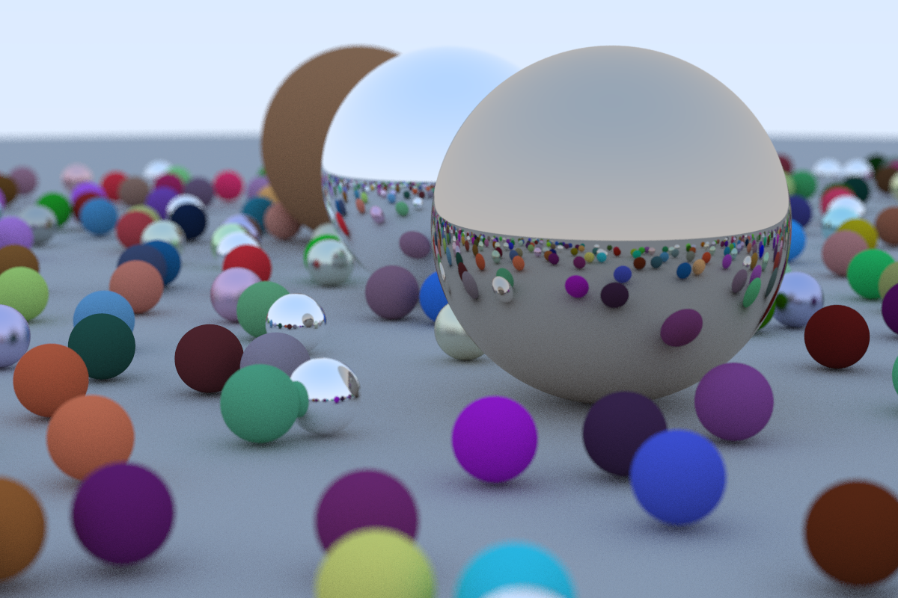

VFX/WIP
Here is a collection of some videos showing off some random different things that I have made but were not a part of any larger project. It mostly includes things that are prototypes or proof of concept type things. Mostly you will find demos of shaders and such that I made but do not plan to write a lengthy blog post about. You will find a short discription of the technique used for every video.
I am always working on and testing new ideas so check back later to see if I have added anymore to this page.
VFX/WIP
-
Post Processing Stack for OpenGL Renderer
I added post processing to the cameras in my OpenGl renderer. It uses frame buffers and off screen rendering to draw the scene into a color texture. From there the camera can ping pong that color texture to any number of other textures while using different shaders to apply post processing. In this video I have the camera apply a blur effect and then a grayscale effect to show off this feature.
-
Pixilation Render Feature for Unity URP
A render feature that creates pixilated rendering for selective objects in the scene. It works by rendering the selected object meshes to a render texture and then down sampling that image before rendering back to the camera color target. Each pixilated pixel is zoomed in the shader to create the pixilated effect.
-
Outline Render Feature for Unity URP
A render feature for the URP in Unity that adds outlines to selective objects, or all objects if you like. The outlines can be as wide as you like and be used for as many objects as you like at the same time. It uses the Jump Flood Algorithm to determine edge distance, which is very performant and wider outlines will at most only add a few more rendering passes to the feature. You can find the code for this on github
-
Sci-fi Spawning effect made in Unity URP
A sci-fi object spawning effect made with Unity in the universal render pipeline. It could be used for spawning all sorts of objects at run time. It is mostly a lot of particle effects but shaders of note are a image distortion shader that uses the opaque texture to create a bending of the image. The other notable shader is the alpha clip shader for the object model. This works by defining a plane in C# for the entire renderers AABB and slowly moving it from the bottom to the top of the AABB. The shader clips pixels below this plane. We also spawn particles directly from this plane to make it look like the object is loading in.
-
Liquid for containers shader
A shader for liquids in containers made with the Universal RenderPipeline for Unity. The shader also uses a script that calculates the height of the liquid in the container from the local bounding volume of the object so that the container can be rotated and the liquid fills the containers correctly.
-
Water Vortex Effect
Unlimited water vortexes effect made in Unity. By rendering the swirls into a render texture, we can build height maps to adjust the vertex position and final albedo of the water. This allows for unlimited vortexes per water mesh, and per vortex control of the shape, size, depth, etc. The end of the video shows this in action.
-
URP Edge Detection Post Process Shader
Edge detection in URP done with Sobel Edge detection. However, the trick here is to reconstruct the world space position of each fragment and use the difference in world space position along the central normal as the depth, instead of raw depth differences, to avoid edge artifacts and glancing angles. Also uses color differences and normal differences to create great edge detection.
-
C++ OpenGL Renderer
To keep practicing writing C++ code I build this little toy renderer in C++ and OpenGL. It is still a WIP but I think it is working pretty well. It supports loading models built with 3D edited software, or downloaded from the internet. It supports loading in textures. And it supports loading in different shaders that you can write in GLSL. You can also add directional, point, and spot lights as well as move and manipulate objects. And all of this is done through a GUI. It still has a ways to go but it has been a fun exercise.
-

Ray Tracing in C++;
In an effort to learn C++ and use it for something I am intersted in I built this little Ray Tracer program. It is not anything fancy but it produces some pretty cool results. I will probably continue working on it, so check back for updates as I add more features to it.
-
Water Shader 1: Planar Reflections
A water shader made in Unity. Main features are the planar reflections used to reflect the scene geometry and skybox. It is does this by rendering a second camera reflected over the water plane and settings its projection matrix so that this second cameras near plane is equal to the water plane. Then by passing this rendered image to the water shader, we can manipulate the uvs of the water shader by the normal at the fragment position to create the effect of refraction. Additionally, the shore foam uses noise textures to create more organic looking foam than by just looking in the depth buffer.
-
Water Shader 2: Caustics
The big feature of this water shader is the procedural water caustics that are prjected on to the scene geometry. They are most easily seen on the rocks on the left side of the video. This effect was created by reconstructing the world space position of the scene geometry behind the water plane by using the depth buffer. Then we can sample a caustics texture with these world space positions being used as UV coordinates. Furthermore, we can split the colors of the caustics texture by doing three texture samples with different offsets for each color channel and then add them back together to get the prism effect of water caustics.
-
Water Shader 3: SDF foam lines
The big feature of this water shader is SDF foam lines around all of the geometry. This effect is achieved by using an orthographic camera looking down on the scene. The near plane of this camera is set equal to the water plane in the scene. We then render all objects seen by the camera with a simple shader that first renders their backfaces and then then their front faces. When rendering the back faces we write one into a render texture. When rendering the front faces we write a zero. The result of this is a render texture that has the shapes of all the objects in the scene at the height of the water plane. I then use the Jump Flood algorithm to expand the area of shapes. We then can sample this render texture in the water shader to get the SDF shapes. I also use another render texture to store the previous SDF shape, so that we can get nice water trails for moving objects.
-
Endless Procedural Clouds
This was an experiment with compute shaders in Unity. It works by using compute shaders to create many layers of stacked meshes on the GPU and then drawing them procedurally from that generated data. This create the illusion of volumetric clouds. The system also is also endless so as the camera moves the chucks of clouds will get discarded and generated to keep them centered over the player. The shader used for drawing uses noise maps to create the final cloud shape. I ramped up the offsets over time in the sampling of these noise maps in the above video to really show how the cloud shapes are not static and can change over time.
-
Volumtric Lighting
This is a post processing effect to give volumetric lighting to windows that may be in a scene. It works by using the direction of the main light in the scene to create a bounding box from the window object to the ground. This bounding box can then be used in ray interection calculations to ray march only through where the light should be projected into the scene. Then as we ray march through the bounding volume we project a vector from the point in the volume to the plane of the window and sample the texture of the window. The result of the ray marching is combined into one value and is used to color that screen pixel. We also sample shadow maps at each point in the ray marching to not add colors for positions that cannot see the light.
-
Custom Terrain Experiment
This is some video from a custom terrain editor I started building in Unity. I use command buffers to draw into splat maps that can then be sampled in the shader for the terrain to allow for lots of different textures and blending of textures. I also use compute shaders to calculate localToWorld matrices for positions on the terrain where you can draw meshes to. These meshes then get drawn procedurally to allow for thousands of detail meshes on the terrain. The second part of the video is showing off some LODing used so that we do not waste time drawing details that will not be scene by the player.
-
Third Person Controller FX
This video is just showing a couple of FX I made for a mock-up character controller I was working on. The first effect is a sonic boom. It works by spawning a particles and the player position as the player moves through their dash ability. The particles use billboarding to face the camera. The shader for the particles use a ring texture and a grab pass to sample the scene behind the particle. The ring texture determines offsets to use when sampling the grab pass. The particle grows over time to create the effect of the sonic boom. The video also shows a simple weapon summoning effect. The shader for the weapon samples a noise texture to dissolve into the scene when the player wants to pull out their weapon.
-
Procedural Dungeon Generation
This video is showing some procedural dungeon generation that I made. It works by being given parameters for what dimensions certain rooms are allowed to be. Then it randomly starts placing rooms connecting them together as it goes until it has filled out the entire map. Then it takes a pass placing objects in the room. Object placement uses an approach inspired by wave function collapse. Objects have constraints around how they can fit into a room. An object is randomly chosen and it attempts to put that object in the room at a certain position. If it fails it moves to a new position and tries a new object. It does this until the room has no more places left to try. It then places enemies that patrol the rooms.